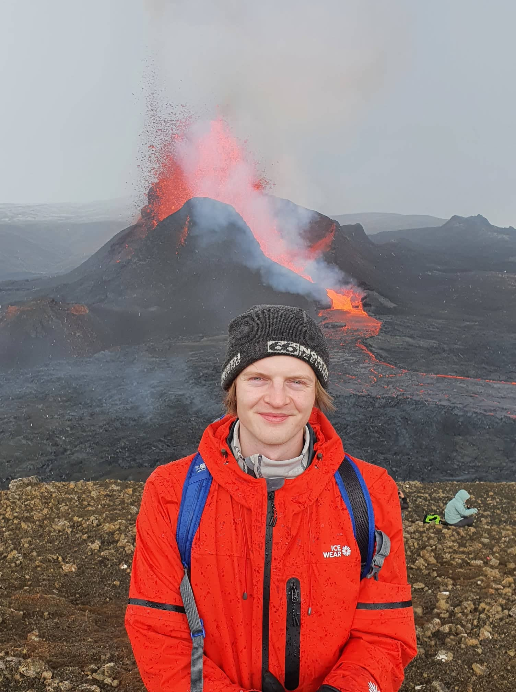

Ferilskrá - Kristján Orri Daðason
Menntun
Háskóli Íslands (2019-)
Vélaverkfræði B.S.
Borgarholtsskóli (2013-2017)
Stúdentspróf af náttúrufræðibraut
Störf
Optitog (2021)
Rannís verkefni, Stýring Ljósvörpu Til Rækjuveiða
Háskóli Íslands (2020-2021)
Dæmatímakennari í línulegri algebru
Faxaflóahafnir (sumarvinna) (2018-2020)
Verkamaður (sumarvinna)
Ýmsar sumarvinnur, t.d. hjá BM Vallá, Hagkaup (-2017)
Lagerstarfsmaður